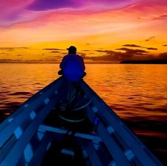

Destination
Para bule yang bosan di rumah. Bosan main hape sambil rebahan?
Pengen healing dan adventure tapi ngga tau mau kemana?
Good News, Anda siap pergi ke salah satu tempat terbaik di dunia?
Ya! ini adalah mentawai island, di sini bisa surfing, lihat sunset, makan pop mie, pokoknya ngga bakal nyesal main ke sini. surga terbaik untuk surfing.
Good News, Anda siap pergi ke salah satu tempat terbaik di dunia?
Ya! ini adalah mentawai island, di sini bisa surfing, lihat sunset, makan pop mie, pokoknya ngga bakal nyesal main ke sini. surga terbaik untuk surfing.
Are You Ready YET?
Because Mentawai SURF is
ALWAYS READY!
Because Mentawai SURF is
ALWAYS READY!
Vacation Activities
Surfing
Mendayung di atas papan selancar itu seperti berusaha
menaklukkan ombak dengan keseimbangan seefisien menyeimbangkan
gelas di atas Nyobain surfing itu kaya jadi bintang acara
"Ngejar Ombak: Catet Gak Nyemplung!" Aku lebih sering endingnya
jatoh dari pada bisa stay di atas papan, jadi kayak bintang
reality show yang nggak pernah bisa move on dari ombak. Ombak
sendiri kayaknya punya sense of humor yang nggak banget, nih!
Ngapain aja sih serunya surfing? Selain main sama ombak, kamu bisa eksplor pantai-pantai kece. Bayangin aja, sambil berguling-guling di pasir, kamu bisa bilang, "Ini tempat paling oke buat kalah keseimbangan dan nyemplung ke dalam petualangan pasir!" 🏄‍♂️😆
Ngapain aja sih serunya surfing? Selain main sama ombak, kamu bisa eksplor pantai-pantai kece. Bayangin aja, sambil berguling-guling di pasir, kamu bisa bilang, "Ini tempat paling oke buat kalah keseimbangan dan nyemplung ke dalam petualangan pasir!" 🏄‍♂️😆
Main Ayunan
Ayunan di pantai itu seperti perjalanan emosional yang tak
terduga. Gue, yang lebih sering terguncang daripada ayunannya,
kayak bintang film "Ayunku yang Galau." Ayunan ini kayaknya
punya kemampuan khusus buat ngebawa perasaan jadi lebih ringan!
Galau di pantai sambil ayunan itu seru banget, ya. Kamu bisa duduk di ayunan, liatin ombak sambil mikirin pertanyaan hidup, kayak "Kenapa kita nggak bisa semua jadi se-simple ombak yang ikut alir terus?" atau "Mengapa hatiku lebih labil daripada ayunan ini?" Sambil tersenyum-senyum sendiri, rasanya kayak ngobrol sama kehidupan sambil goyang-goyang di atas tanda tanya raksasa. 🏖️😅
Galau di pantai sambil ayunan itu seru banget, ya. Kamu bisa duduk di ayunan, liatin ombak sambil mikirin pertanyaan hidup, kayak "Kenapa kita nggak bisa semua jadi se-simple ombak yang ikut alir terus?" atau "Mengapa hatiku lebih labil daripada ayunan ini?" Sambil tersenyum-senyum sendiri, rasanya kayak ngobrol sama kehidupan sambil goyang-goyang di atas tanda tanya raksasa. 🏖️😅

Lihat Sunset
Nonton sunset di pantai itu seperti nonton akhir episode drama
hidup. Gue, yang lebih sering duduk-duduk daripada bener-bener
fokus nonton, kayak bintang film "Cinta yang Terbenam Bersama
Matahari." Langit senja ini kayaknya punya kemampuan bikin hati
berasa seger!
Nonton sunset di pantai itu seru banget. Kamu bisa duduk di pasir, liatin matahari perlahan tenggelam, sambil mikirin hal-hal serius kayak, "Apakah matahari ini punya jadwal pasti atau cuman mood swing aja?" atau "Mengapa senja ini bikin hati jadi galau tapi bahagia?" Sambil menikmati perubahan warna langit, rasanya kayak sedang menyaksikan lukisan raksasa yang diciptakan oleh sang waktu. 🌅😊
Nonton sunset di pantai itu seru banget. Kamu bisa duduk di pasir, liatin matahari perlahan tenggelam, sambil mikirin hal-hal serius kayak, "Apakah matahari ini punya jadwal pasti atau cuman mood swing aja?" atau "Mengapa senja ini bikin hati jadi galau tapi bahagia?" Sambil menikmati perubahan warna langit, rasanya kayak sedang menyaksikan lukisan raksasa yang diciptakan oleh sang waktu. 🌅😊
Kolam Renang
Setelah mandi di laut, tiba saatnya beralih ke kolam renang
untuk pengalaman yang lebih santai. Kolam renang itu seperti
oase pribadi, tempat di mana airnya lebih tenang daripada drama
ombak di laut. Saya, yang lebih sering berusaha bertahan di atas
pelampung daripada selancar ombak, merasa seperti bintang film
"Renang Santai, Pelampung Galau."
Berenang di kolam renang itu benar-benar bisa jadi pelarian yang menyenangkan setelah pertempuran dengan ombak laut. Tidak ada lagi tarikan kuat yang mencoba menarik saya ke dalam petualangan air yang tak terduga. Rasanya seperti menyelam ke dalam dunia yang tenang, di mana hanya ada suara gemericik air dan keputusan untuk apakah ingin berenang, berbaring di pelampung, atau sekadar merendam kaki. Sambil menikmati sinar matahari dan warna air kolam, hidup terasa seperti liburan tanpa batas. 🏊‍♂️😌
Berenang di kolam renang itu benar-benar bisa jadi pelarian yang menyenangkan setelah pertempuran dengan ombak laut. Tidak ada lagi tarikan kuat yang mencoba menarik saya ke dalam petualangan air yang tak terduga. Rasanya seperti menyelam ke dalam dunia yang tenang, di mana hanya ada suara gemericik air dan keputusan untuk apakah ingin berenang, berbaring di pelampung, atau sekadar merendam kaki. Sambil menikmati sinar matahari dan warna air kolam, hidup terasa seperti liburan tanpa batas. 🏊‍♂️😌
Kuliner
Setelah bermain di kolam renang, perut yang lapar menuntut
kelezatan. Saatnya menjelajahi dunia kuliner, dan tidak ada yang
bisa mengalahkan kenikmatan lontong. Saya, yang lebih sering
merasa kenyang daripada bisa berenang selancar, merasa seperti
bintang kuliner "Lontong Lover: Petualangan Rasa Tanpa Batas!"
Lontong, dengan kelembutan dan kelezatannya, adalah salah satu kuliner terbaik di dunia. Dengan nasi yang dikukus dalam daun pisang, diiris kecil-kecil, dan disajikan dengan hidangan khas seperti sayur lodeh, rendang, atau sambal terasi, lontong benar-benar mengundang selera. Rasanya yang lezat dan keaslian bumbu membuat setiap suapan seperti perjalanan kuliner yang memikat. Sambil menikmati lontong, hidup terasa seperti petualangan rasa yang tak terlupakan di dunia kuliner. 🍚🌶️😋
Lontong, dengan kelembutan dan kelezatannya, adalah salah satu kuliner terbaik di dunia. Dengan nasi yang dikukus dalam daun pisang, diiris kecil-kecil, dan disajikan dengan hidangan khas seperti sayur lodeh, rendang, atau sambal terasi, lontong benar-benar mengundang selera. Rasanya yang lezat dan keaslian bumbu membuat setiap suapan seperti perjalanan kuliner yang memikat. Sambil menikmati lontong, hidup terasa seperti petualangan rasa yang tak terlupakan di dunia kuliner. 🍚🌶️😋

Budaya Lokal
Setelah kenyang dengan lezatnya lontong, saatnya menjelajahi
budaya lokal yang ramah dan bersahaja. Saya, yang lebih sering
mencari petualangan kuliner daripada menguasai seni selancar,
merasa seperti bintang dokumenter "Budaya Ramah, Sapaan yang
Hangat."
Di sini, budaya lokal menyambut dengan senyum hangat dan keramahan yang membumi. Mungkin ada pasar tradisional yang penuh warna, di mana pedagang dengan senang hati berbagi kisah di balik setiap barang dagang. Atau mungkin ada pertunjukan seni lokal yang menggambarkan keindahan dan kekayaan warisan budaya. Sambil berjalan-jalan, merasakan kedekatan dengan masyarakat setempat, dan menyaksikan tradisi yang dipertahankan dengan penuh kegembiraan, hidup terasa lebih berwarna dan penuh makna. Sebuah petualangan sederhana di tengah budaya yang ramah dan bersahaja membawa kenangan yang tak terlupakan. 🌏🤝😊
Di sini, budaya lokal menyambut dengan senyum hangat dan keramahan yang membumi. Mungkin ada pasar tradisional yang penuh warna, di mana pedagang dengan senang hati berbagi kisah di balik setiap barang dagang. Atau mungkin ada pertunjukan seni lokal yang menggambarkan keindahan dan kekayaan warisan budaya. Sambil berjalan-jalan, merasakan kedekatan dengan masyarakat setempat, dan menyaksikan tradisi yang dipertahankan dengan penuh kegembiraan, hidup terasa lebih berwarna dan penuh makna. Sebuah petualangan sederhana di tengah budaya yang ramah dan bersahaja membawa kenangan yang tak terlupakan. 🌏🤝😊